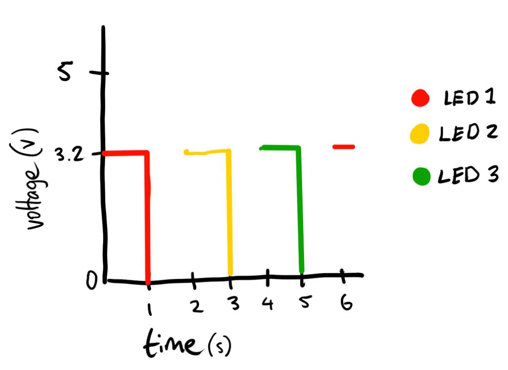
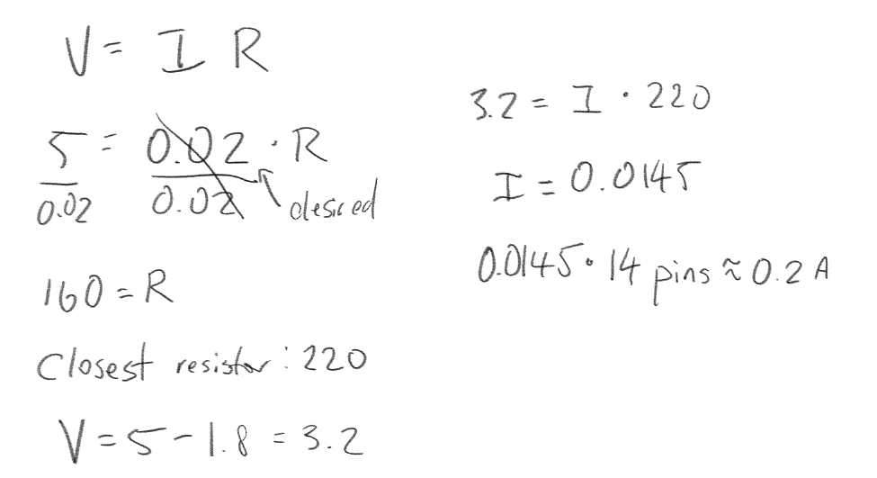

Here is all the documentation for assignment 1!

Above is a gif of my working circuit! As you can see, each red LED blinks independently.

Above is the schematic that shows my usage of three pins, three resistors, and three LED lights that all connect back to ground.
Firmware
// the setup function runs once when you press reset or power the board
void setup() {
// initialize digital pin LED_BUILTIN as an output.
pinMode(8, OUTPUT);
pinMode(9, OUTPUT);
pinMode(10, OUTPUT);
}
// the loop function runs over and over again forever
void loop() {
digitalWrite(8, HIGH); // turn the LED #1 on (HIGH is the voltage level)
delay(1000); // wait for a second
digitalWrite(8, LOW); // turn the LED #1 off by making the voltage LOW
delay(1000); // wait for a second
digitalWrite(9, HIGH); // turn the LED #2 on (HIGH is the voltage level)
delay(1000); // wait for a second
digitalWrite(9, LOW); // turn the LED #2 off by making the voltage LOW
delay(1000); // wait for a second
digitalWrite(10, HIGH); // turn the LED #3 on (HIGH is the voltage level)
delay(1000); // wait for a second
digitalWrite(10, LOW); // turn the LED #3 off by making the voltage LOW
delay(1000); // wait for a second
}
The code above allows the LEDs of different pins to blink.
Additional Questions
The number of LEDs that can be blinked independently would be 14, which would draw about 0.2A. This is explained below.
The speed of that the lights could be blinking independently is at 60 hZ for the human eye to be unable to keep up.